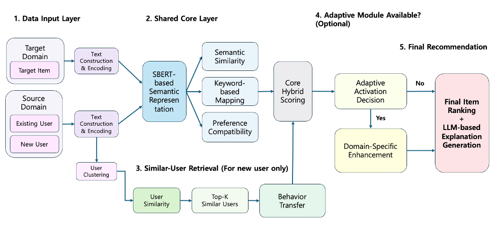
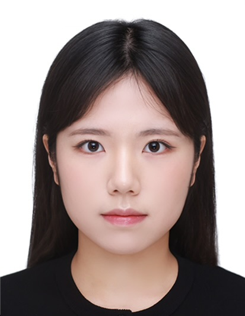
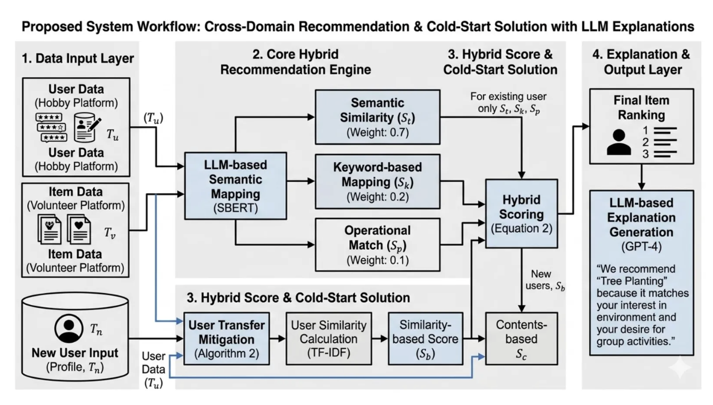
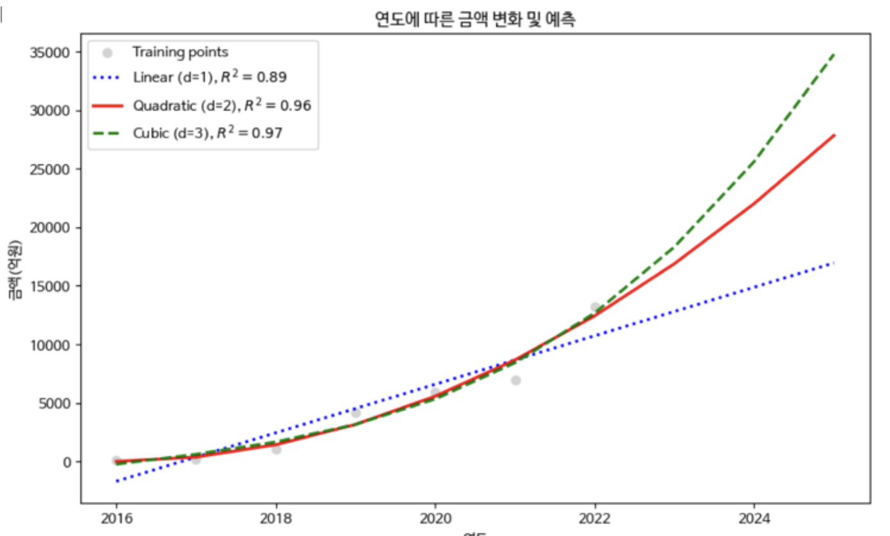

An Adaptive Cross-Domain Recommendation Framework for Structurally Disjoint Domains via Semantic Representation and Similar-User Knowledge Transfer
Jiyoun Lee, Kyung Hee Park, Hyon Hee Kim
Applied Sciences, Under Review, 2026
I'm an undergraduate student at Dongduk Women's University, double majoring in Information Statistics and Computer Science.
I enjoy identifying meaningful problems, exploring possible solutions, and turning ideas into working systems through research and experimentation.
I am always open to opportunities to learn, collaborate, and work on interesting research problems.


Jiyoun Lee, Kyung Hee Park, Hyon Hee Kim
Applied Sciences, Under Review, 2026

Jiyoun Lee, Kyung Hee Park, Hyon Hee Kim
Proceedings of the Annual Symposium of KIPS, 2026

Seo Jung Ha, Se Hyeon Oh, Soh Jung Ban, Jiyoun Lee, Hyon Hee Kim
Proceedings of the Annual Symposium of KIPS, 2024
Developed a recommendation pipeline combining item metadata, image features, and user survey responses.
Language models for conversational recommendation and preference reasoning, combined with a LightGBM forecasting model and SHAP-based interpretability.
Quad Miners
Aug. 2026 – Feb. 2027
WPP Media Korea
Jan. 2026 – Feb. 2026
B.S. in Information Statistics
Mar. 2021 – Feb. 2027 (Expected)
Exchange Student in Computer Science
Mar. 2025 – Aug. 2025